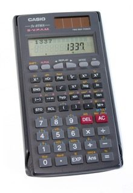
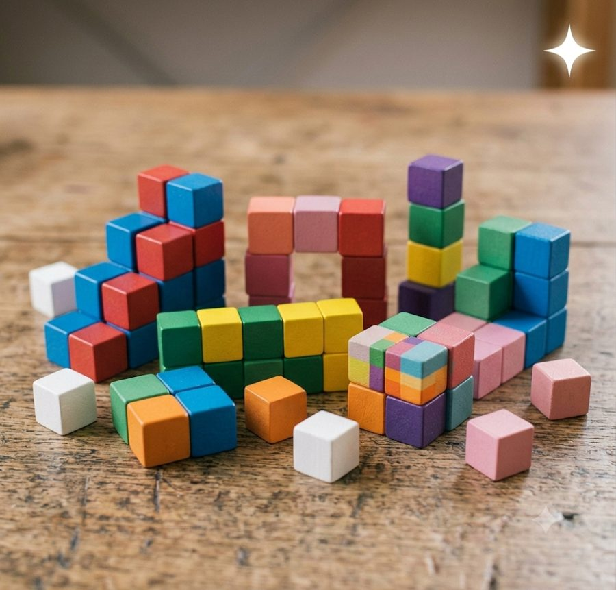

IA en Ingeniería Civil · ETSI Caminos ·
GeoOceanIA en Ingeniería Civil · ETSI Caminos ·
GeoOcean
IA en Ingeniería Civil · ETSI Caminos ·
GeoOceanIA en Ingeniería Civil · ETSI Caminos ·
GeoOcean

Formación del profesorado

Punto de partida
 Regla de cálculo
Regla de cálculo
Calculadora científica Calculadora
programable
Calculadora
programable Ordenador
Ordenador IA
IAEntra un número, sale un número. Misma entrada, mismo resultado: determinista.
Entra una pregunta; sale texto, código, imágenes, audio… Misma pregunta, respuestas distintas: hay que comprobarla.
¿Qué IA tengo que usar? · 2

¿Cabe en mi ordenador? El modelo ocupa en memoria aproximadamente parámetros × bits / 8. Comprimido a 4 bits: unos 0,5 GB por cada mil millones de parámetros, más 1–2 GB de margen.
# con Ollama: descarga y conversa con un modelo de 8 B
ollama run qwen3:8b
También con LM Studio, con ventanas y sin terminal.
| Tamaño | Memoria (4 bits) | Dónde funciona |
|---|---|---|
| 3–4 B | ~2–3 GB | Cualquier portátil de 8 GB |
| 7–8 B | ~4–6 GB | Portátil de 16 GB |
| 27–32 B | ~15–20 GB | 32 GB de RAM, o GPU de 24 GB |
| 70 B | ~40 GB | Estación de trabajo de 64 GB |
B = miles de millones de parámetros. Con GPU o un Mac con chip M responde mucho más rápido.
La propuesta para la Escuela

longitud_onda(T, h), asomeramiento(T, h), rompe(H, h). En
cualquier materia: una integral, leer datos, una EDO, consultar una norma…

Propagar una ola hacia la costa: dispersión → asomeramiento → rotura (H ≥ 0,78·h). Una ola de 3 m y 8 s rompe a unos 4,1 m de profundidad con H ≈ 3,2 m.

Un dique: oleaje (marítima) + cimentación (geotecnia) + manto (estructuras y construcción). Otros: puente, inundación urbana, ciudad, carretera.
Nivel 2 con incidencia normal y sin refracción, calculado con los
bloques de bloques/oleaje.py. El lenguaje común: notebooks de Python en Jupyter.
Plan de formación del profesorado
En granate, el seminario que ya está listo:
Las herramientas, casi todas libres:
Para terminar